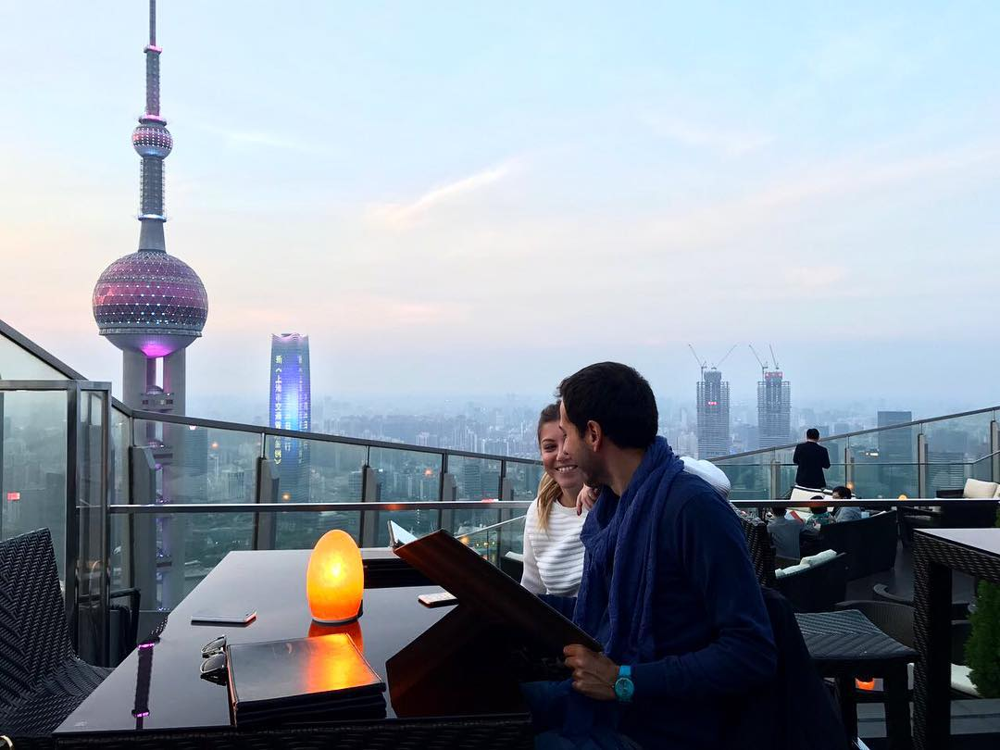
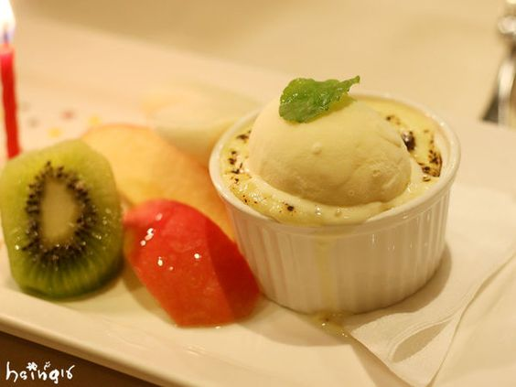
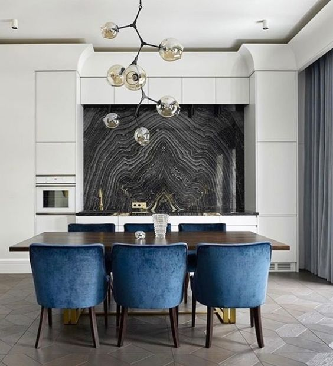

有趣的灵魂，
总是与美食相伴。
在吃乎，一起创造美味与生活的感动
登录
注册
@王孙鸿
@意味轩
真的是一个完美的庆生经验！最感谢最幸运是碰到灵魂人物—杭州姑娘Betty❤️也谢谢主厨的美好食物！ 服务的质量往往是客人永远难忘的！因为现今世界哪里都吃得到各式各样的餐点，但唯有真诚的服务是有温度有记忆的！
2017年4月20日
@林怡月
@Flair Rooftop
小蓉包有心，挑了这家可以站着晒太阳、赏风景的餐厅慰问伤残人士。新开放的午餐服务也着实平复了对下午茶不接受散客预定的不满心情。 餐厅走东南亚风格，午餐包含自助色拉、东南亚风味小食拼盘、自选主食和甜品组合。酒水需要另点，可以在吧台挑选水果榨汁，也可以选择香槟畅饮。 菜品中主食中的香煎三文鱼比较出彩。鱼皮焦酥鱼肉鲜嫩，三文鱼本身汁水的鲜甜和咖喱酱汁的浓郁，碰撞出重口味与小清新的奇妙组合。
2017年3月4日
@李曼婷
@小杨生煎
越开越多家了，而且还多了些新产品，不太饿但是嘴馋的时候一两生煎刚好可以填填肚。 一两四颗8元的生煎，拿了票自己到窗口取，四颗白胖的生煎洒了白芝麻和葱花，香气诱人。先咬口尝汤汁，嗯，味道还是一样好，汤汁还是一样多，加点醋可以去油腻兼提味，有时候小杨生煎的皮底会煎到黑焦焦的咬都咬不动，还好这四颗都是金黄酥脆。
2017年2月7日
@林璟雯
@St Maxime法国紫色餐厅
非常棒的法国菜，牛排跟法式pizza一定要试！传统和新派鸡尾酒出品也是很不错。这个规模的餐厅居然有差不多二十款单一麦芽威士忌也是灰常罕见的。这里没有玩骰盅和划拳的嘈音的烦扰是附近餐厅酒吧罕有的！我会回来的。
2017年1月30日
@陈鹏涛
今天去了一家超棒的餐厅
@BAIA. Restaurant. Bar. Grill
.这里的食物好得没话说,重点是服务人员的专业与素养,是在大陆上少有可达国际标准的...用餐的环境与气氛,在任何时候都非常享受,值的! 对了, 这里也常有在办私人餐会,生日宴或订婚宴的,数于年轻新派的优雅精致宴会...对于外籍人士或经常出国的人来说, 这里有你们要的"感觉"!!!
2016年10月5日
@张军
@Capo Hong Kong
正宗意大利休闲菜式，味道也非常好，由外籍厨师在半开放式厨房处理，特别要提的是价格绝对惊喜，食材都非常新鲜。推荐这里的鳕鱼，竹碳脆皮让鱼肉保持了鲜嫩多汁的本色，酿鱿鱼则赋予了外脆内香的丰富，还有爆浆的芝士茄子等，鲜香交融，都让人很有满足感啊！
2017年3月2日
@赵荣
@深圳威斯汀扒房
对威斯汀扒房仰慕已久，终于有机会去感受一把，果然食品和服务都没有失望！男朋友定的位，他们给我们桌面做了非常浪漫的装饰，令人非常惊讶。点了法国生蚝和鹅肝（听说是他们的招牌），真的非常好吃，鹅肝很香，外焦里嫩，牛扒他们服务生推荐了M9级的和牛，推荐了五分熟，入口即化的感觉，尤其是对于我这种肉食动物再合适不过了！两个字： 满足！
2017年1月17日
@孙远航
@深圳Paletto意大利餐厅
 由于下午要从福田站出发，所以中午过来吃了商务套餐。出品真心不错，208元一套，绝对是丽思良心价。头盘是千层茄子，随后是西兰花汤，主食是银鳕鱼以及甜品巧克力冰淇淋。我坐的区域客人都坐满了，服务也不错，都能贴心关怀。意大利经理Dario和中国经理Sue都很nice，服务我的Helen笑容很美。如果有机会会再来！
2017年1月10日
@周梦洁
@香宫
今天放假带上爸妈和宝宝来香宫喝早茶。爸妈都说：“这里粤式点心特别好吃！”宝宝九个月大，不是什么都可以吃，但他看到这里的猪仔包特别兴奋。竟然扶着BB凳起来，趴在桌上抢了一笼猪仔包。吃包子的时候，静静地吃很享受。
2017年1月3日
@蒋浩宇
@洲际
五年前来新加坡住在新落成的金沙，一切都新，因从机场一酒店都有司机接送，因为天气原因只有晚上出来走动，没有留下太多映像，这次住洲际酒店，比较意外喜欢上了酒店，进而喜欢上了新加坡，虽然酒店有些年份，但胜在位置，去哪里都方便，周边生活配套，原居民生活状态及体验留有深刻映像，酒店让我离开一直有美好的回忆！
2017年2月26日
🍱移动应用 🍻联系我们 🍤建议反馈🍥©吃乎2017